La Chose (Ben Grimm) (Terre-616)
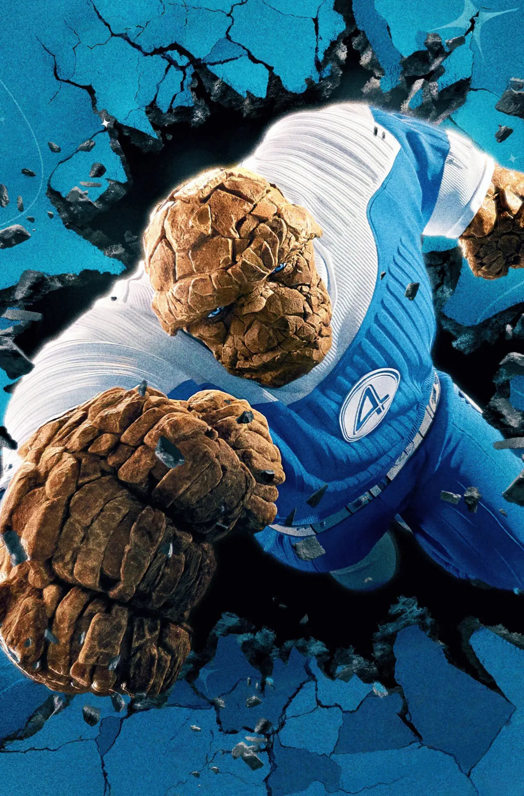
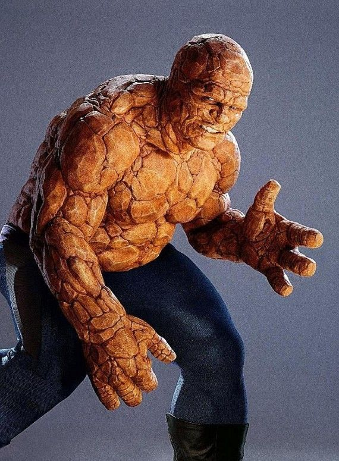
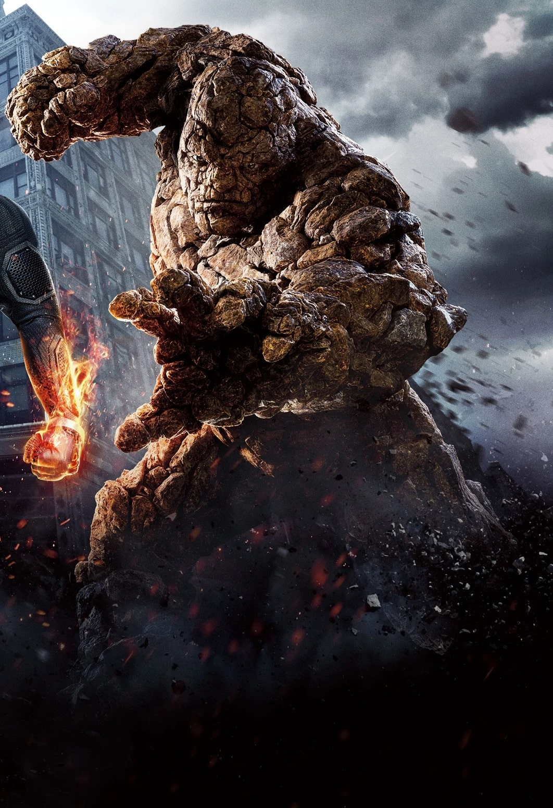
Origines :
Benjamin J. Grimm est né à Yancy Street, dans le Lower East Side de Manhattan, où il grandit dans la pauvreté.
Son père, alcoolique, était incapable de garder un emploi.
La majeure partie des revenus familiaux venaient de Daniel, le frère aîné de Ben, qui se procurait de l'argent illégalement en tant que chef du gang de Yancy Street.
Grimm, qui idolâtrait son frère, devint amer envers le monde entier lorsque Daniel fut tué pendant une fusillade entre gangs rivaux.
Ben n'avait que huit ans.
Après la mort de ses parents, Ben fut recueilli par son oncle Jake, qui avait surmonté la pauvreté pour devenir médecin.
Au début, Grimm se montrait réticent face à la bienveillance de ses nouveaux tuteurs, mais finalement il leur rendit leur affection.
Il quittera le gang pour entrer au lycée et deviendra une star du football américain.
En terminale, il obtiendra une bourse sportive pour jouer au football à l'Université d'État de Hegeman, dans l'État de New-York.
Grâce à ses performances, il obtiendra le surnom de « Faucheuse ».
Pendant sa première année à l'université, il partagea sa chambre avec Reed Richards, un brillant étudiant en sciences, qui deviendra son ami le plus proche.
Reed confia à Ben son intention de construire un vaisseau spatial capable de réaliser des voyages interstellaires, et Grimm lui promit, en plaisantant, qu'il serait son pilote s'il parvenait à le construire.
Après avoir obtenu son diplôme, Ben s'engagea dans l'US Air Force et devint un pilote de chasse chevronné, ainsi qu'un pilote d'essai et un astronaute.
Pendant ce temps, Richards poursuivait son projet de construction de vaisseau spatial, grâce à sa fortune personnelle et à un financement du gouvernement fédéral.
Le jour où Grimm quitta l'armée, Reed vint le voir pour lui rappeler sa promesse.
Le projet de Richards était basé à Central City, en Californie.
Mais lorsque le gouvernement fédéral menaça de retirer son financement, Richards décida de réaliser le plus rapidement possible un vol d'essai à bord de son vaisseau, le Marvel-1.
Ben s'opposa à cette idée, avertissant que le blindage pourrait s'avérer insuffisant en cas de tempêtes de radiations.
Néanmoins, Reed réussit à le persuader de piloter le vaisseau, et la future épouse de Richards, Susan Storm, ainsi que son jeune frère Johnny, insistèrent pour les accompagner.
Les quatre amis s'introduisirent donc clandestinement dans la base de lancement, montèrent à bord du vaisseau et décollèrent.
Leur objectif était de voyager en hyperespace jusqu’à un autre système solaire, avant de revenir.
Cependant, le vaisseau traversa une tempête de rayons cosmiques d'une intensité inattendue.
Le vaisseau, qui n'était pas conçu pour résister à un tel niveau de radiations, subit un bombardement intense qui irradia les quatre passagers et endommagea gravement les commandes.
Ben fut donc contraint d'interrompre le vol et de rentrer en catastrophe sur Terre.
De retour sur Terre, les quatre passagers découvrirent que les radiations cosmiques avaient provoqué des mutations chez-eux.
Reed constata que son corps était devenu malléable et qu'il pouvait désormais l'allonger à volonté, Susan, elle, obtint la capacité de devenir invisible, et Johnny était capable d'enflammer son corps.
Quant à Ben, il s'était transformé en une créature orange, à la peau épaisse et rocailleuse et aux muscles saillants.
Richards convainquit les autres qu'ils devaient utiliser leurs pouvoirs pour faire le bien, au sein d'une équipe nommée les « Quatre Fantastiques ».
Reed prit le nom de « Monsieur Fantastique », Susan et Johnny devinrent la « Femme Invisible » et la « Torche Humaine », et Ben, horrifié par son apparence grotesque, se baptisa « la Chose ».
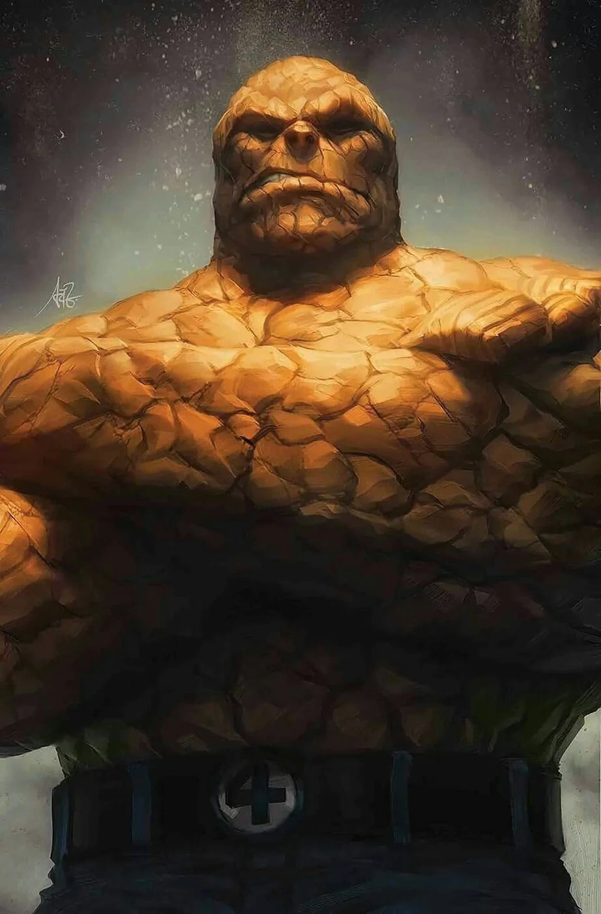
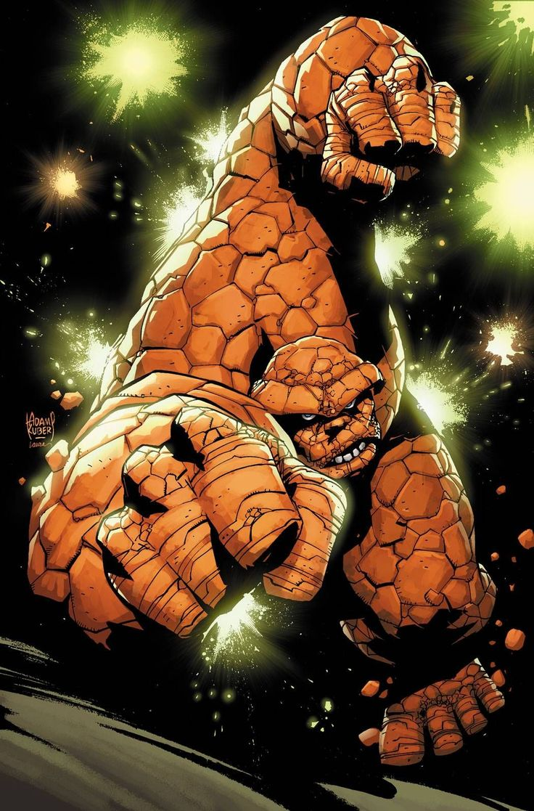
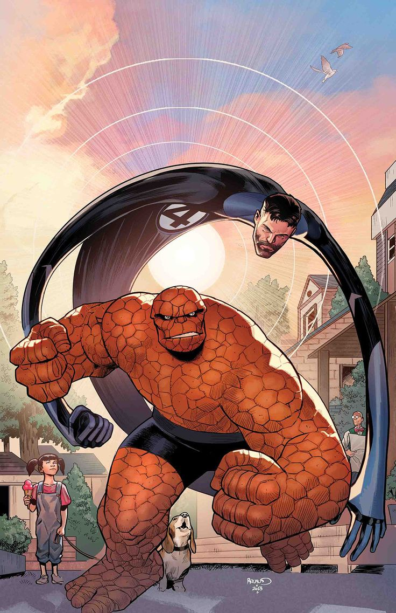
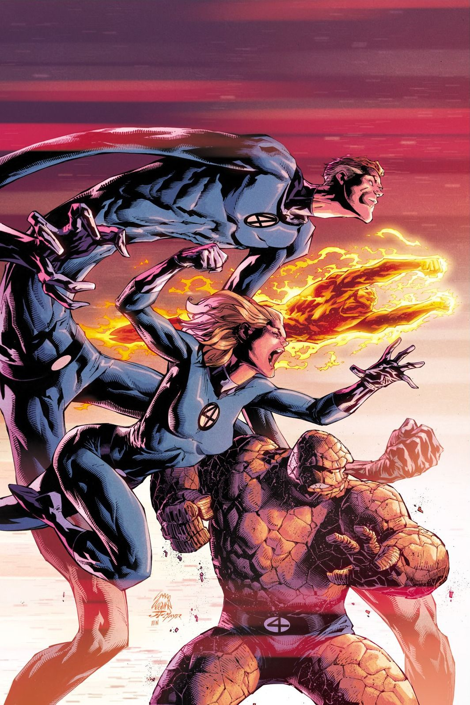
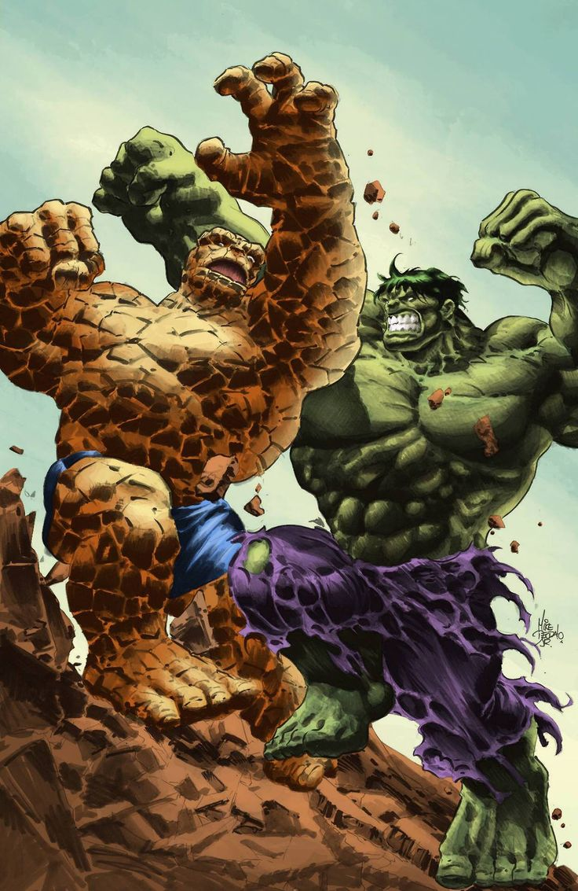
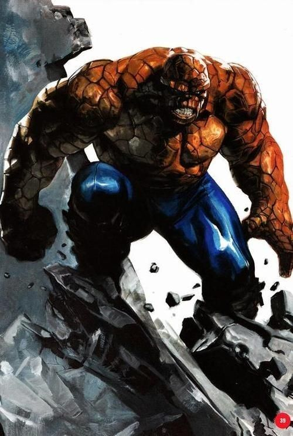
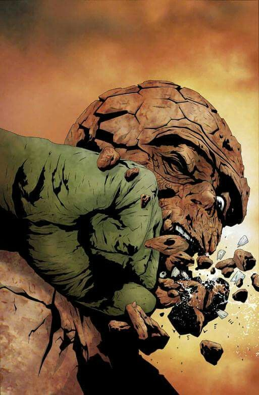
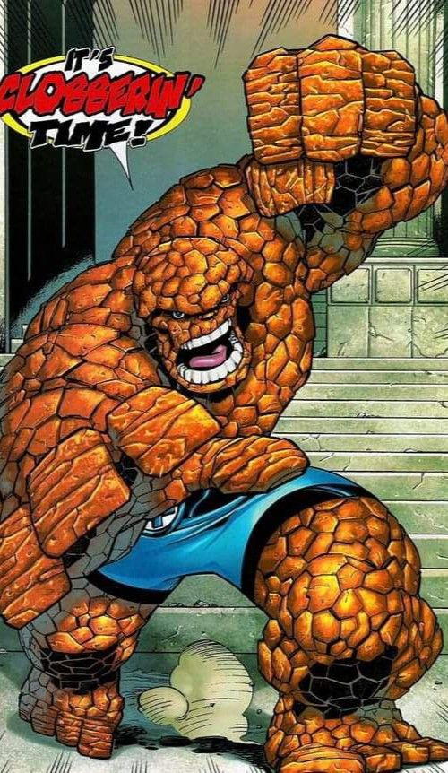
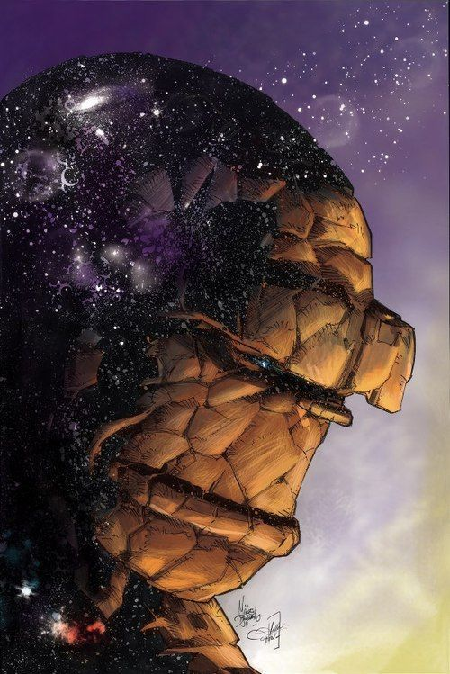
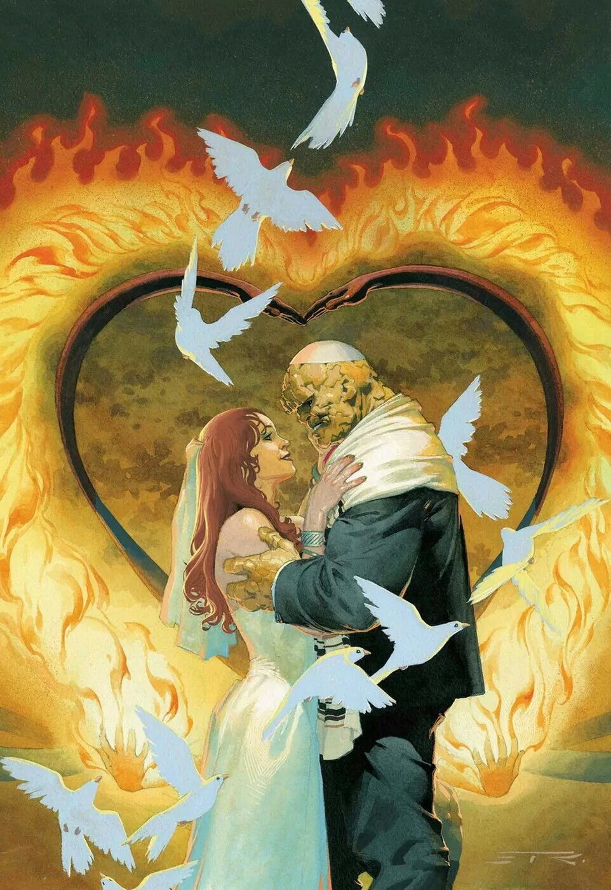
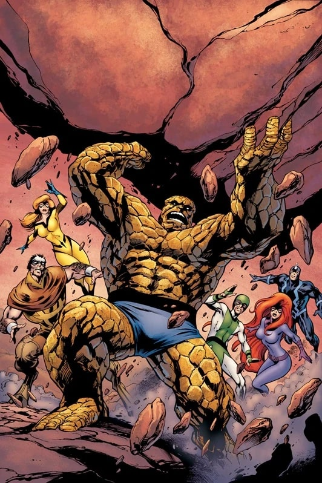
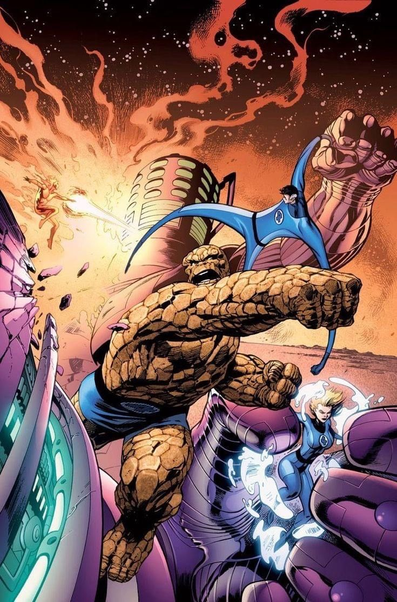
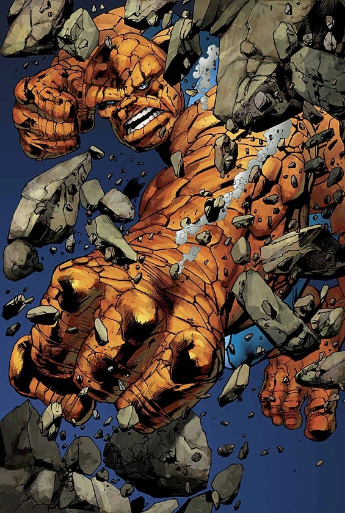
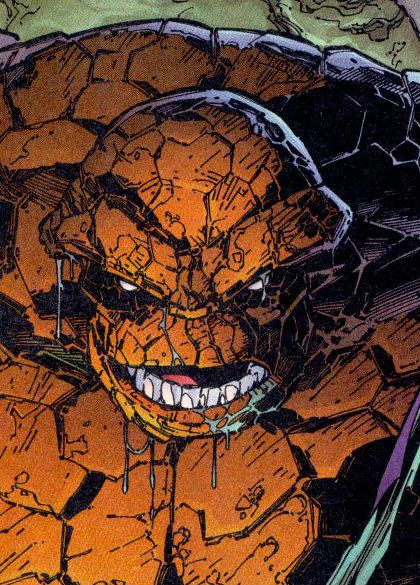
Personnalité :
Ben Grimm est généralement présenté comme un homme bourru et franc, mais extrêmement loyal.
Mais derrière son apparence monstrueuse et son tempérament colérique se cache une personnalité profondément humaine, marquée par la souffrance, avec un grand cœur.
Ben possède un fort sens de l'honneur et de la responsabilité, ce qui fait de lui un des piliers des Quatre Fantastiques.
Il est protecteur et courageux, et est souvent celui qui fonce en première ligne pour défendre ses proches.
Capacités :
Après sa transformation, Ben a acquis une force surhumaine, dont les limites ont évoluées avec le temps suite à des entraînements physiques intense (on estime qu'il peut soulever environ 85 tonnes aujourd'hui, contre environ 5 tonnes au début de sa carrière).
Sa musculature, son squelette, mais aussi ses organes et la structure cellulaire de son corps ont été affectés par sa transformation, ce qui l'a rendu beaucoup plus fort et endurant.
Il peut utiliser sa super-force pendant de longues heures sans s'arrêter, ses muscles ne générant que très peu de toxines.
Ses poumons sont également bien plus volumineux que ceux d'un humain normal, ce qui prolonge sa durée en apnée.
Sa peau est très résistante : elle est plus dure que de la roche et peut encaisser des chocs très violents, comme un impact d'obus ou de roquette, voir des coups assénés par des individus ayant le même niveau de force que Hulk (quand celui-ci est calme).

Apparence :
La Chose possède une apparence immédiatement reconnaissable grâce à son corps entièrement recouvert d'une peau rocheuse orange, composée de larges plaques irrégulières semblables à des pierres empilées.
Son physique est massif et extrêmement musclé, lui donnant l'allure d'un colosse de pierre.
Généralement, la Chose porte une variante du costume des Quatre Fantastiques classique.
Contrairement aux autres membres, Ben ne porte pas une combinaison intégrale, mais seulement un short bleu aux couleurs des Fantastiques, avec leur logo à la ceinture.
Les principaux ennemis de la Chose


Équipes affiliées